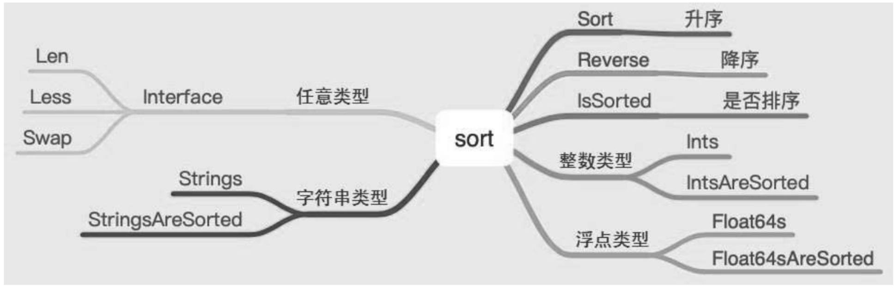

10.15. sort¶
排序算法是常见的算法，内置库实现了插入排序、归并排序、堆排序和快速排序，有几种排序算法是不可直接访问的，需要使用内置的库来访问，因此使用过程中无须关心使用了哪种排序算法。
内置库提供了对常见数据类型的排序。排序包含如下操作：
升序、降序。
是否排序。
对任意数据类型进行排序。
对数值类型的数组进行排序很容易理解，如何对结构体进行排序呢？结构体中包含多个属性或者字段，对结构体排序时，应该按照某一个属性或者字段进行排序，否则无法比较。
内置库也提供了相应的接口，实现对任意数据类型的排序，如图
10.15.1. 1. 整数类型数值的排序¶
func SortIntsUsage() {
list := []int{10, 9, 2, 8, 3}
sort.Ints(list)
fmt.Println(list) // [2 3 8 9 10]
sort.Sort(sort.Reverse(sort.IntSlice(list)))
fmt.Println(list) // [10 9 8 3 2]
}
10.15.2. 2. 浮点类型数值的排序¶
func SortFloatsUsage() {
list := []float64{10, 9, 1.2, 3.4, 12.1}
sort.Float64s(list)
fmt.Println(list) // [1.2 3.4 9 10 12.1]
sort.Sort(sort.Reverse(sort.Float64Slice(list)))
fmt.Println(list) // [12.1 10 9 3.4 1.2]
}
10.15.3. 3. 字符串类型数值的排序¶
func SortStringsUsage() {
list := []string{"a", "A", "c", "C", "B", "b"}
sort.Strings(list)
fmt.Println(list) // [A B C a b c]
sort.Sort(sort.Reverse(sort.StringSlice(list)))
fmt.Println(list) // [c b a C B A]
}
字符串按照首字母的ASCII编码进行排序。
可以很方便地实现对内置基本类型的排序，如何对任意类型（比如复杂的结构体）进行排序呢？
答案是实现Interface接口。
type Interface interface {
// Len is the number of elements in the collection.
Len() int
// Less reports whether the element with index i
// must sort before the element with index j.
Less(i, j int) bool
// Swap swaps the elements with indexes i and j.
Swap(i, j int)
}
要实现Interface接口，就需要实现Len、Less、Swap三个方法。
package main
import (
"fmt"
"sort"
)
type Language struct {
Year int `json:"year"`
Name string `json:"name"`
Account string `json:"account"`
}
type Languages []Language
func (ls Languages) Len() int {
return len(ls)
}
func (ls Languages) Less(i, j int) bool {
return ls[i].Year < ls[j].Year
}
func (ls Languages) Swap(i, j int) {
ls[i], ls[j] = ls[j], ls[i]
}
func SortStruct() {
list := Languages{
{
10, "Golang", "Google",
}, {
28, "Python", "Google",
}, {
30, "Java", "***",
}, {
1, "Lua", "23",
},
}
fmt.Println("Ori", list)
sort.Sort(list)
fmt.Println("sort", list)
for _, i := range list {
fmt.Println(i)
}
}
func main() {
SortStruct()
}
自定义的结构体Languages按照字段Year从小到大排序，开发者实现Interface接口即可。
再回过头来看如何排序内置的基本数据类型。
// IntSlice attaches the methods of Interface to []int, sorting in increasing order.
type IntSlice []int
func (x IntSlice) Len() int { return len(x) }
func (x IntSlice) Less(i, j int) bool { return x[i] < x[j] }
func (x IntSlice) Swap(i, j int) { x[i], x[j] = x[j], x[i] }
type Float64Slice []float64
func (x Float64Slice) Len() int { return len(x) }
func (x Float64Slice) Less(i, j int) bool { return x[i] < x[j] || (isNaN(x[i]) && !isNaN(x[j])) }
func (x Float64Slice) Swap(i, j int) { x[i], x[j] = x[j], x[i] }
type StringSlice []string
func (x StringSlice) Len() int { return len(x) }
func (x StringSlice) Less(i, j int) bool { return x[i] < x[j] }
func (x StringSlice) Swap(i, j int) { x[i], x[j] = x[j], x[i] }
由此可以看出，内置的基本数据类型已经实现了Interface接口。
同样的，浮点类型、字符串类型也实现了Interface接口。
10.15.4. 4.sort -排序算法¶
https://www.topgoer.cn/docs/golangstandard/golangstandard-1cmksspljkkud
10.15.5. 5. 小结¶
内置的排序库可以很方便地让开发者实现对基本数据类型的排序，或者对自定义结构体按照某一个字段进行排序，只要实现Interface接口即可。
而使用者无须关心内置库到底使用了哪种排序算法。